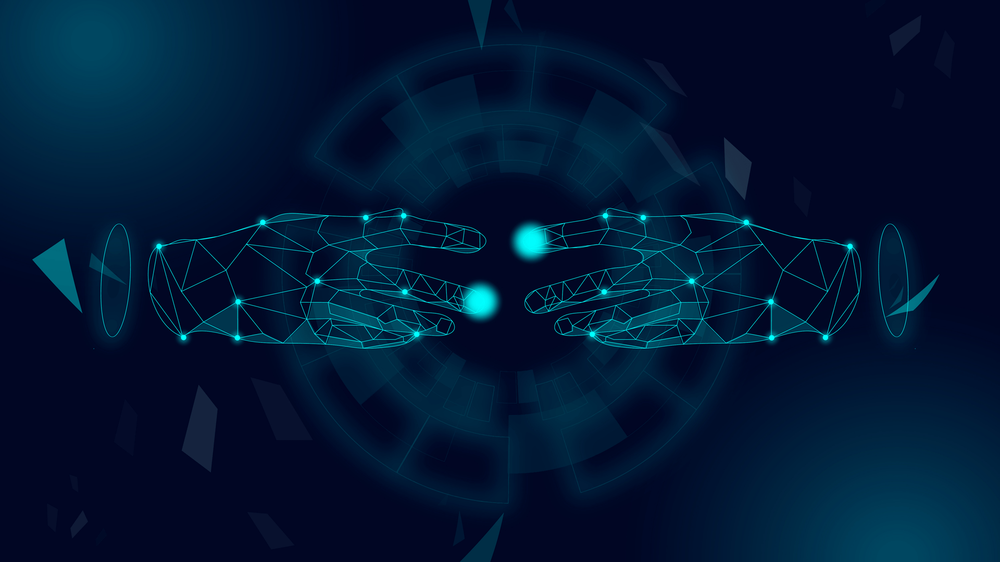

Types of artificial intelligence page
Links:
Types of artificial intelligence
Ai can be classified according to its capabilities into three different types as follows:
Limited or narrow ARTIFICIAL INTELLIGENCE :
Weak AI or Narrow AI is a type of AI that can perform specific and clear tasks, such as self-driving cars, or even speech or image recognition software, or
chess on smart devices, and this type of ARTIFICIAL INTELLIGENCE is the most common and available type of ai today.
General AI, a type that can work with a similar capacity to human thinking, focuses on making the machine able to think and plan on its own and similar to human thinking, but there are no practical examples of this type, all that exists so far is just research studies that need a lot of effort to develop and turn it into reality, and the method of artificial neural network Super AI is the type that may exceed human intelligence, which can do tasks better than a specialized and knowledgeable human being, and for this type many of the characteristics it must include, such as the ability to learn, plan, communicate automatically, and make judgments, but the concept of super-artificial intelligence is a hypothetical concept that does not exist in our time.Interactive Machines: Reactive Machines is the simplest type of artificial intelligence, lacking the ability to learn from past experiences or past experiences to develop future businesses, interacting with current experiences to produce them in the best possible way, examples of this type of ARTIFICIAL INTELLIGENCE are IBM's Deep Blue devices and Google's AlphaGo system.General AI, the type that can work with a similar capacity to human thinking, focuses on making the machine able to think and plan on its own and similar to human thinking, but there are no practical examples of this type. :
Self-perception: Self-Awareness is one of the future expectations of artificial intelligence science, so that machines have self-awareness and special feelings, which will make them smarter than the human being, and this concept still does not exist on the ground.

refrance
https://en.wikipedia.org/wiki/Artificial_intelligence